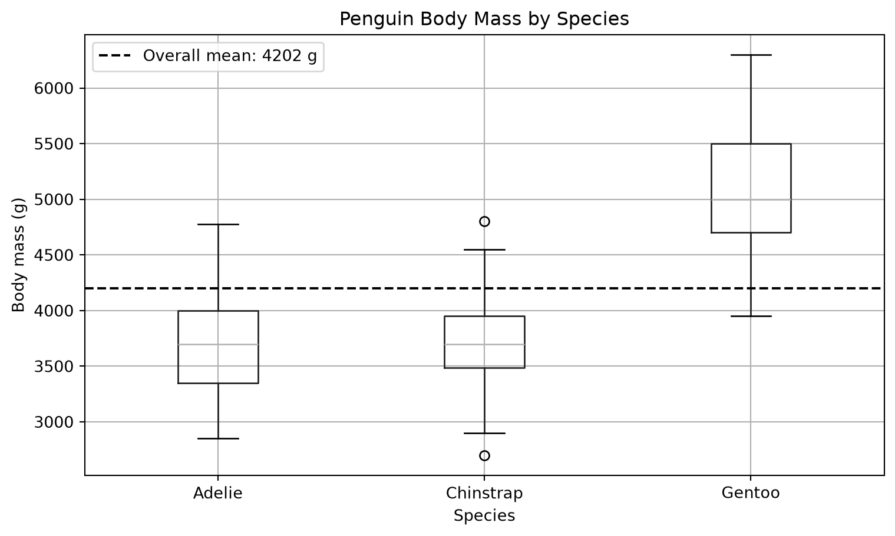

The Palmer Penguins dataset contains measurements collected from penguins observed near Palmer Station in Antarctica. In this analysis, I investigate how body mass differs among the three penguin species in the dataset.
The goal is to summarize body mass by species and visualize the differences between the groups.
Data source:Palmer Penguins, created by Allison Horst using data from Palmer Station Antarctica LTER.
Load and inspect the data
The dataset is provided by the palmerpenguins Python package, so the analysis does not need to download a data file from the internet at render time.
from palmerpenguins import load_penguinsimport pandas as pdimport matplotlib.pyplot as pltimport sysprint("Python executable:", sys.executable)penguins = load_penguins()penguins.head()
The summary table gives several measures of typical body mass and variation for each species. Comparing the mean and median values provides information about the center of each group’s distribution.
Visualize the distributions
The next figure shows the distribution of body mass for each species. The horizontal reference line represents the overall mean body mass across the cleaned dataset.
overall_mean = analysis_data["body_mass_g"].mean()fig, ax = plt.subplots(figsize=(8, 5))analysis_data.boxplot( column="body_mass_g", by="species", ax=ax)ax.axhline( overall_mean, color="black", linestyle="--", linewidth=1.5, label=f"Overall mean: {overall_mean:.0f} g")ax.set_title("Penguin Body Mass by Species")ax.set_xlabel("Species")ax.set_ylabel("Body mass (g)")ax.legend()plt.suptitle("")plt.tight_layout()plt.show()

Figure 1: Body mass distributions for Palmer Penguins by species.
Findings
The summary statistics and figure show that body mass differs among the three penguin species.
The species have different typical body masses, while the boxplots also show variation within each species. The mean and median values provide complementary summaries of the center of each distribution.
These are descriptive patterns in the Palmer Penguins dataset. This analysis does not perform a statistical hypothesis test or attempt to generalize beyond the observations represented by these data.
Conclusion
Using Python, I loaded the Palmer Penguins dataset, inspected its structure, removed observations with missing values for the variables of interest, calculated species-level body-mass summaries, and created a visualization of the distributions.
This provides a reproducible computational workflow in Python because the data loading, cleaning, summary calculations, and visualization are all performed by code when the Quarto document is rendered.